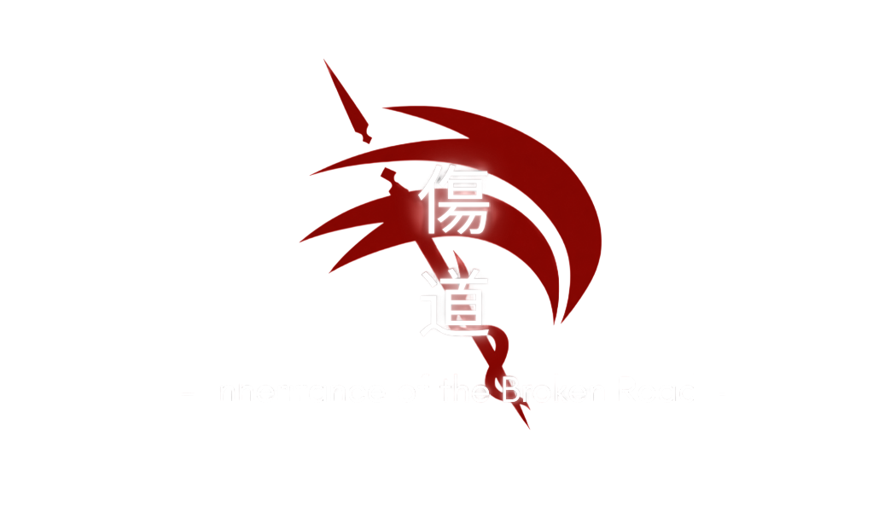

by TeamWyvern & Studio Caliper · Written by PenWorks · Music by MonoLogicThis game autosaves automatically at key story moments. Do not close the window immediately after a major choice — allow a moment for the save to complete.
Kizumichi is a work of fiction. All characters, events, organisations, and locations are entirely fictitious. Any resemblance to real persons, living or dead, or to actual events is purely coincidental.
Best experienced in full screen